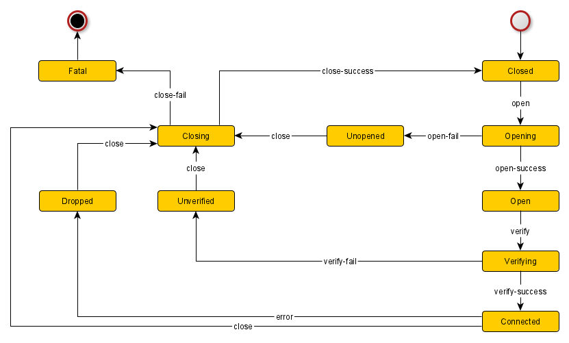

Introduction
Connectable refers to any object that has the ability to be connected to and disconnected from. Following this state machine ensures a common understanding of the terminology used to describe the state of connectable components is observed and that the representation of state and connection methodology is common across all hardware wrappers.
NOTE: The connection state is an internal representation of an external actor. For example, an 'Open' state means 'we believe it is open' and no guarantee can be made about the true state of the hardware.
State Diagram
The following diagram describes the available states and transitions for a connectable.

States
- Closed- the connection is closed. No active connection exists.
- Opening- an attempt to open a connection did not result in failure.
- Open- an attempt to open a connection did not result in failure.
- Unopened- an attempt to open a connection resulted in failure.
- Verifying- an open connection exists and is being verified.
- Connected- an open connection exists and has been verified.
- Unverified- an open connection exists but could not be verified.
- Dropped- the connection was unintentionally and unexpectedly broken.
- Closing- the connection is in the process of being closed.
- Fatal- the connection is in a fatal, unrecoverable state.